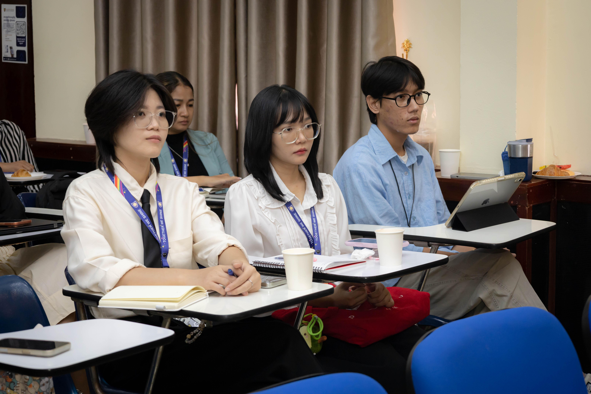
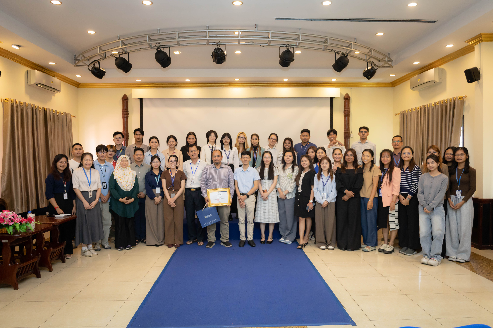

AI Workshop in Cambodia

Faculty Seminar — AI Tools and Agents Across the Research Workflow, University of Puthisastra
I'm grateful to the Research Unit at the University of Puthisastra for the opportunity to share my experience and knowledge of Generative AI in research. The workshop, organised by the university, brought together students and faculty for a two-hour session that was full of interaction and engagement from the audience throughout.

It was a rewarding session discussing how generative AI can support researchers — not just in writing, but across the research workflow: exploring ideas, analysing data, thinking critically about results, verifying claims, and producing research more efficiently. Drawing on methods and findings from my own research, we worked through concrete examples rather than staying at the level of generalities, which is what seemed to keep the room engaged for the full two hours.

I hope everyone who attended came away with something they can use in their own work, and I'd welcome the chance to collaborate further with the Research Unit and the wider University of Puthisastra community. Sessions like this are a reminder that generative AI's place in research is still being worked out in the room, together with the people who will actually use it.